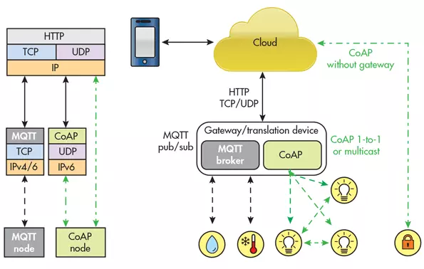
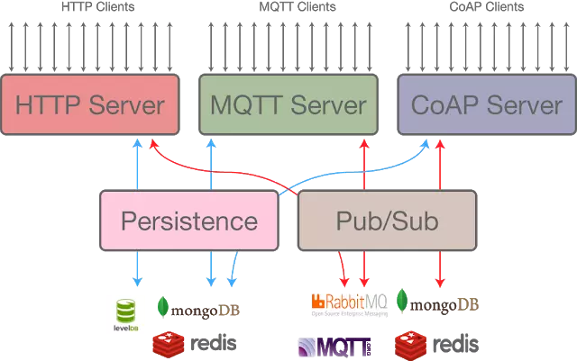

基础通信协议
基础通信协议方面就有两个专门的竞争协议：消息队列遥测传输( MQTT )，和受约束的应用协议(CoAP)。
它们都设计为轻量级，并仔细使用稀缺的网路资源。两者都在正确的环境中使用，但问题是，由于物联网的快速发展，一般人们不知道这些协议是什么？或何时使用？ 
什么是MQTT
MQTT的全名为Message Queuing Telemetry Transport，为IBM和Eurotech共同制定出来的protocol，在MQTT的官网可以看到一开始它对MQTT的介绍：
http://mqtt.org/ MQTT is a machine-to-machine (M2M)/"Internet of Things" connectivity protocol. It was designed as an extremely lightweight publish/subscribe messaging transport.
简单来说，它是为了物联网而设计的protocol，并且它是透过publish/subscribe的方式来做讯息传送。由于是为了物联网而设计的协定，因此它所需要的网路频宽是很低的，而所需要的硬体资源也是低的。
MQTT很像Twitter。这是一个「发布和订阅」协议。
Publish/Subscribe： 在看MQTT之前，最好要先知道Publish/Subscribe的讯息传送机制为何，这样之后在看其协定时，才会更快上手。
Publish/Subscribe有三种主要的组成元件，分别为Publisher、Subscriber以及Topic。
Publisher为讯息的来源，它会将讯息发送给Topic，而Subscriber向Topic注册，表示他们想要接收此Topic的讯息；因此当有某个Publisher对Topic发送讯息时，只要是有对此Topic注册的Subscriber，都会收到此则讯息。
它们的关系如下图：

MQTT特性 了解了Publish/Subscribe的机制之后，接着看看MQTT有哪些特性：
- Publish/Subscribe的讯息传送模式，来提供一对多的讯息分配。
- 使用TCP/IP来提供基本的网路连结。
- 三种讯息传送服务的qualities：
- "At most once"，最多一次，讯息遗失或是重复发送的状况可能会发生；这种quality适合应用在环境感测，不在意资料是否会遗失，因为下一次的资料取样很快就会被published出来。
- "At least once"，至少一次，这种quality保证讯息会送达，只是可能会发生重复发送讯息的状况。
- "Exactly once"，确定一次，确认讯息只会送到一次。这种quality适合用在计费系统，系统只要有重复收到资料、或是资料遗失状况发生，就会造成系统错误。
- 由于他的header固定长度为2byte，因此可以减少封包传送时的额外负载，并减少所需的网路频宽。
- 当异常断线发生时，会使用最后遗嘱(Last Will and Testament)的机制，通知各个感兴趣的client。
MQTT现况： MQTT现阶段，并不是一个标准化的Protocol，还在持续改进中，目前为MQTT V3.1。不过IBM已于2013年，已经将它交给OASIS进行标准化了，并且一直以来IBM对此协定采开放、免授权费的方式，让它能够被散布，因此相信不久的将来，会成为一个主流的Protocol。
而目前支援MQTT的Client API，有Eclipse Phno Project有对MQTT client支援，其支援C、Java、Javascript、C++等等的语言，可说是支援度很高的Project。而目前已经在应用MQTT的，最知名的应该就是Facebook Message App了吧，可以参考此篇文章。
小结： 上面提到的，低频宽、低硬体需求的特性，讯息传递为Publish/Subscribe的方式，正好可以用来实现Push Notification的机制，并且能达到手持装置省电的需求，接下来会先从其Protocol开始了解，并用Client Api跑些范例来应用此Protocol。
什么是CoAP
CoAP(The Constrained Application Protocol) 目前已是IETF标准(RFC 7252) ，提出一个类似HTTP/TCP设计，但是属于轻量版的HTTP/UDP，使得其有利于感测节点进行网路传输。
CoAP主要特点：
- CoAP是主从(Client/Server)架构，感测节点多半为CoAP Server提供资源，由CoAP Client请求读取/控制资源状态。CoAP使用UDP (port: 5683)，对于资料是否要重传或传送顺序(Reordering)全交由上层应用层来决定，对于资源有限的MCU则不需要有完整TCP/IP协定实作
- 而CoAP同HTTP一样具有REST(Representational State Transfer)设计风格，也支援GET/PUT/POST/DELETE及URIs的请求方式。
- CoAP采用二进位整数格式且封包标头4个byte而非HTTP使用字串格式(ASCII code)，所以封包传送时的额外负担小且不必像HTTP一样得进行耗时的字串解析处理。
- CoAP QoS : CoAP讯息分为Confirmable或Non-Confirmable。Confirmable要求接收端须回送ACK，若没有收到ACK则重送一次。若送的是Non-Confirmable讯息，则送出端不在乎接收端是否收到。
- CoAP加密使用DTLS (Datagram Transport Layer Security)
- 通知机制: CoAP扩展了HTTP GET，加入了一个observe flag，使得CoAP Server能主动回传，CoAP Client所observe的资源状态。
- NAT Issue:若感测节点在NAT后方，则必须一开始先送出请求到外部，使路由器可以接受来自外面CoAP Client的请求，例如请求资源清单。
DTLS加密过程使用预设密钥PSK或椭圆曲线Diffie-Hellman ECDH算法，这种方法同样也是DLMS中使用的加密方法。存在的问题是，在使用ECDH时会受到DDoS的攻击，使用大的证书使得服务端瘫痪
CoAP vs MQTT 比较
MQTT
MQTT的特点是可以保持长连接，具有一定的实时性，云端向设备端发送消息，设备端可以在最短的时间内接收到并作出响应，所以MQTT更适合需要实时控制的场合，更适合执行器。要保持长连接，那么就要时不时地发送心跳包，这就不会省电了。所以低功耗的场合并不适合MQTT。MQTT的长连接需要建立在TCP的基础上，TCP协议的复杂性决定了对设备的要求是比较高一些的，相比UDP。
CoAP
CoAP的特点是低功耗，数据发完就可以休眠了。所以CoAP更适合数据采集的场合，更适合纯粹的传感器设备，特别是电池供电的传感器设备。基于UDP协议，对设备的要求比较简单。华为出的NB-IoT芯片就只支持UDP和CoAP，华为的决策告诉我们CoAP和NB-IoT是一对。
总结
- 都是公开标准且都是基于IP层的协定
- 封包标头小且采用binary格式
- CoAP属于一对一通讯，MQTT则是多对多
- 若考虑感测节点在NAT后方的情况，由于MQTT的架构因为有中央broker的角色，MQTT Client本来就持续连接在broker，所以可以直接推播讯息，没有NAT问题。
- MQTT是多个客户端通过一个中央代理传递消息的多对多协议。它通过让客户端发布消息、代理决定消息路由和复制来解耦生产者和消费者。虽然MQTT持久性有一些支持，但它是最好的实时通讯总线。
- CoAP基本上是一个在Client和Server之间传递状态信息的单对单协议。虽然它支持观察资源，但是CoAP最适合状态转移模型，而不是单纯的基于事件。
- MQTT Clients与Broker之间保持TCP长连接，这个在NAT环境中也不会有问题。CoAP Clients与Server都要接收和发送UDP包。在NAT环境下使用CoAP，需要使用“隧道掘进”或者端口转发(内网穿透)，否则像LWM2M（轻量级M2M）一样，首先初始化设备到‘头端’( head-end )的连接.
- MQTT不支持带有类型或者其它帮助Clients理解的标签消息。MQTT消息可用于任意目的，但前提是所有的Clients必须知道消息格式。而CoAP则相反，它内置内容协商和发现支持，这样允许设备彼此窥测以找到交换数据的方式。
| 协议 | 核心特点 | 下层协议 | 应用场合 | 硬件要求 |
|---|---|---|---|---|
| MQTT | 长连接 | TCP | 实时控制/执行器 | 较高 |
| CoAP | 低功耗 | UDP | 数据采集/传感器 | 较低 |
来自网上的一个对比：
物联网应用层通讯协定标准比较
机器对机器(Machine-to-Machine， M2M)通讯是物联网的一个重要运作概念。随着物联网的应用日益兴盛，M2M流量会持续增加，故针对M2M Traffic特征及其应用，M2M通讯技术应运而生。
由于物联网架构下，感测节点本身多半采用MCU，且以电池供电，故这些新的M2M协定必须考量，在有限的硬件能力及功耗等条件下，使得M2M Traffic在进行网路传输时，有较高的Throughput、低延迟、低电力耗损，甚至提供不同的QoS (Quality of Service)。
目前各家提供连结物联网装置的云端资料服务平台
AWS IoT( https://aws.amazon.com/tw/iot/)、Evrythng (https://evrythng.com/))、Xively( https://www.xively.com/ )、ThingSpeak( https:/ /thingspeak.com/ )、ThingWorx(https://www.thingworx.com/ )等及晶片厂提供的云平台，如联发科的MCS( https://mcs.mediatek.com/ )、ARM mbed Device Connector ( https://connector.mbed.com/ )等，都广泛支援CoAP及MQTT协定，故将选择此两种协定来进行说明与比较。
然而CoAP Client要取得位于NAT后方的感测节点资料，则须要在路由器上，设上设定virtual server，或port forwarding之类才能使用，不然就必须另外有第三方伺服器存在，让感测节点先连出才行。
需要注意的是，CoAP的网络层只有IPv6，所以如果没有物联网网关Gateway，一个IPv4的云端是无法直接访问CoAP终端的，只能由终端发起去访问固定的云端服务器。在大量的物联网终端情况下，保持连接或者会话是不现实的。因此物联网Gateway就非常重要了，需要服务器通过Gateway集成专有的寻址应用，反向建立与在NAT后的终端连接。
对比
什么时候使用它们？
可能都在问的问题是，「如果他们很相似，我应该在什么时候使用哪一个；又在什么时候，使用哪一个？」


由于发布/订阅体系结构与中间商中介，MQTT是广域网（WAN，互联网）上的设备之间的通信的理想选择。它在带宽有限的情况下是最有用的，例如远程现场站点或其他缺乏强大网络的区域。
MQTT是Azure和Amazon服务产品的一部分，因此它具有很多已建立的架构，使其易于适应当前的开发人员。
CoAP的强项是与HTTP的兼容性。如果您有一个基于Web服务的现有系统，那么在CoAP中添加是一个很好的选择。它建立在用户数据报协议（UDP）上，这在一些资源有限的环境中是有用的。由于UDP允许广播和多播，您可以使用较少的带宽潜在地传输到多个主机。这使得它对于设备需要快速交流的本地网络环境很好，这对于一些M2M设置是传统的。
如果物联网开发人员正在使用将利用现有Web服务器架构的设备，开发人员将使用CoAP。但是，如果开发者正在构建一个设备真正“仅报告”的东西 - 也就是说，它被丢弃在网络上，只需要将数据报告回服务器 - CoAP将会更好。其他用途，如云架构，可能最好用MQTT完成。
MQTT和CoAP的未来
随着时间的推移，对于其他协议，使用或行业采用趋向于向更自由和包容的平台迁移，除非非包容性平台更好。 MQTT和CoAP都是开放标准，任何人都可以实现。 CoAP由标准机构启动，而不是由私有公司（包括IBM）设计的MQTT。 CoAP被设计为处理资源有限的环境，可能是它成为赢家，但是目前MQTT似乎处于领先地位。 MQTT背后有显着的动力 - 大云玩家已经选择了这一势头，或者至少选择它。此外，许多商业用例需要MQTT（存储和转发，集中式主机）的功能。然而，一种可能性是，一些围绕HTTP（例如移动应用程序开发）进行标准化的软件开发可以开始利用CoAP来处理外围设备，并与后端通信，以帮助减少不良连接带宽。
最终，这些协议可以通过互联网有效部署在不同的应用程序中。我们知道有特定的使用案例，其中每个都是最好的，但是我们也知道，物联网和物联网设备将会在复杂性和普及性方面继续发展。对于开发人员来说，了解应用程序的关键差异不仅可以实现更好的初始部署，而且可以为今后的开发工作奠定坚实的基础。
参考：